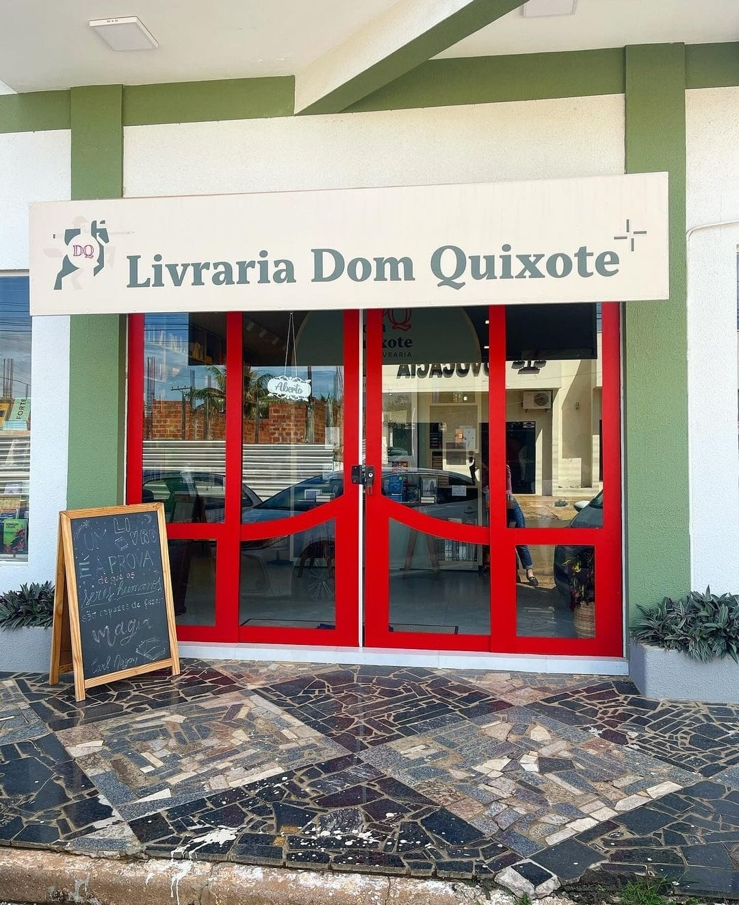
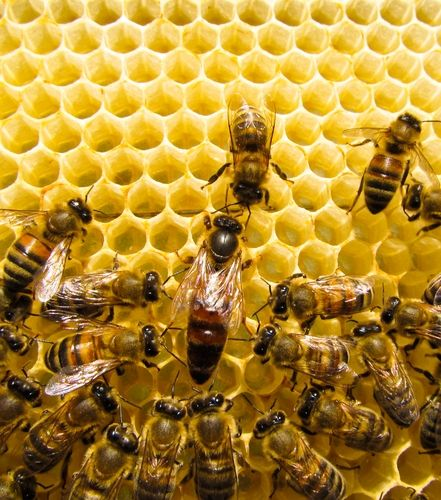
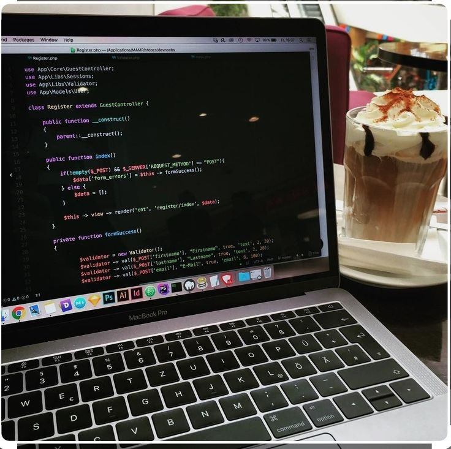

Meus projetos
Clube de Leitura Dom Quixote
A Dom Quixote é meu lugar favorito em Vilhena depois do meu quarto. Eles tem um Clube do Livro incrível e mal vejo a hora de participar do próximo. Lá fazemos metas de leitura semanal e então temos os encontros, aos sábados, para discutir sobre o livro da vez.
Para saber mais sobre a Dom Quixote acesse: Instagram Dom Quixote
Sesão Cinema

Eu particularmente sou uma amante nata de filmes e adoro assisti-los acompanhada. Minha irmã e eu, ou meu namorado e eu, temos costume de fazer sessões de filmes sempre, geralmente eu já conheço ao filme que assistimos e gosto de ver as reações deles com as cenas de maior importância.
Possíveis projetos futuros
Abelhas
A professora de biologia, Vanessa, estava com planos de fazer um projeto para abelhas, pois estas estão correndo risco de extinção pela alta quantidade de agro tóxicos muito fortes. Até onde sou informada, o projeto ainda não foi lançado, mas quando for, estarei no aguardo para participar
Informática
No ano que vem, pretendo entrar em algum projeto na área de Informática. Por mais que não tenha nenhuma intenção de seguir na carrreira, acho que seria legal entrar para algum curso, apenas para fim de aprendizado mesmo.